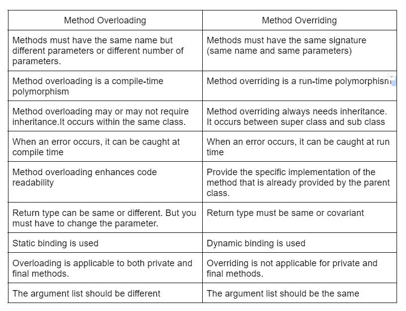
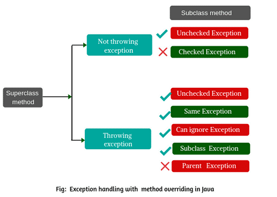

1. Java Components Interview Questions
2. Java OOPS Interview Questions
3. String and Immutable Interview Questions
4. Exception Handling Interview Questions
5. Multithreading Interview Questions
6. Java Comparable vs Comparator Interview Questions
7. Synchronization Interview Questions
8. Serialization And DeSerialization Interview Questions
9. Java Miscellaneous Interview Questions
1. Java Components Interview Questions
Q1. Can you tell me the difference between JDK, JRE, and JVM?
1. JDK (Java Development Kit):
- Purpose: The JDK is a complete software development kit that developers use to create Java applications. It includes the JRE, as well as development tools like the Java compiler (javac), debuggers, and various utilities.
- Functionality: The JDK is used to write and compile Java code. When you write Java source code, the JDK’s compiler converts it into bytecode, which can then be executed by the JVM. The JDK also includes tools for debugging, documentation generation, and other development-related tasks.
Development tools:
- Javac: The Java compiler converts Java source code (.java files) into bytecode (.class files). This bytecode is platform-independent and can be executed by the JVM.
- javadoc: Generates API documentation from Java source code comments.
- javap: Class file disassembler, Allows you to view the bytecode of compiled .class files.
Debugging tools:
- jdb: Java Debugger. Used for finding and fixing bugs in Java programs.
Execution tools:
- jvm launcher, jjs (jshell): jjs was a command-line tool introduced in Java 8 as part of the Nashorn JavaScript engine.
Package tools:
- jar: Java Archive Tool. Used to package Java classes and resources into a single archive file (.jar).
Security tools:
- keytool: Used for managing cryptographic keys, certificates, and keystores. It's essential for creating and maintaining the security infrastructure needed for Java applications.
- jarsigner: Used to sign JAR files digitally, ensuring their integrity and authenticity, and to verify those signatures, which is critical for distributing trusted Java applications.
Monitor & Management tools:
- jconsole: Provides a graphical interface to monitor and manage Java applications, particularly useful for observing memory usage, CPU consumption, thread usage, and other performance metrics.
- jstack: The primary use of jstack is to capture the current state of all threads in a JVM. This is particularly useful for diagnosing issues like deadlocks, thread contention, and performance bottlenecks.
Native Libraries:
- Use: The JDK includes native libraries (.dll on Windows, .so on Linux, .dylib on macOS) that provide platform-specific functionality, such as graphics rendering and system interactions.
2. JRE (Java Runtime Environment):
- Purpose: The JRE provides the runtime environment that is needed to run Java applications. It includes the JVM and core standard libraries, supporting API, utilities but does not contain development tools like compilers or debuggers.
- Functionality: When you want to run a Java application, the JRE is what you need. It contains everything required to run Java programs, such as the JVM, core libraries, and other components necessary for executing Java applications.
Components of the JRE:
- 1. Java Virtual Machine (JVM):
- The JVM is the core component of the JRE, responsible for executing Java bytecode. It interprets or compiles the bytecode into native machine code and manages system resources like memory and threads.
- 2. Java Class Libraries:
- The JRE includes a set of standard Java libraries (also known as the Java API) that
provide a wide range of functionalities:
- java.lang: Fundamental classes like String, Math, System, etc.
- java.util: Utility classes like collections (lists, sets, maps), date/time, etc.
- java.io and java.nio: Input/output classes for file handling, streams, and networking.
- java.net: Classes for networking operations, such as sockets and URLs.
- java.sql: Classes for interacting with databases using JDBC.
- javax.*: Extensions to the core libraries, including GUI components (Swing), XML processing, etc.
- The JRE includes a set of standard Java libraries (also known as the Java API) that
provide a wide range of functionalities:
- 3. Class Loader:
- The class loader is part of the JVM but integral to the JRE's operation. It loads Java classes into memory as they are needed, ensuring that the correct classes are available for execution.
- 4. Java Plugin (for web browsers):
- Note: This component is mostly obsolete due to the deprecation of applets.
- The Java plugin allows Java applets to run within web browsers, although modern browsers have largely phased out support for this due to security concerns.
- 5. Java Web Start:
- Note: Also deprecated in newer Java versions.
- This component allowed the launching of Java applications directly from the web without the need to manually download and install them. It provided a way to deploy Java applications over a network.
3. JVM (Java Virtual Machine):
- Purpose: JVM is a core component of the Java programming language, responsible for executing Java bytecode on any device or operating system. It acts as an intermediary between the compiled Java program and the underlying hardware and operating system, enabling Java's platform independence—"write once, run anywhere”.
- Functionality: It interprets the compiled Java bytecode (from .class files) and translates it into machine code, which is then executed by the computer's CPU. The JVM also handles system-level tasks such as memory management, garbage collection, and thread management.
Use and Importance of the JVM:
- Platform Independence: The JVM enables Java's "write once, run anywhere" capability by abstracting the underlying hardware and operating system differences.
- Loading Code: The JVM loads .class files (compiled Java bytecode) into memory. This is done by the class loader subsystem of the JVM, which finds and loads the class files at runtime.
- Bytecode Verification: The JVM verifies the bytecode to ensure it adheres to Java's security and format rules before execution. This prevents malicious code from being executed.
- Execution of Code: The JVM interprets or compiles the bytecode to native machine code using either an interpreter or the Just-In-Time (JIT) compiler. This native code is what gets executed by the underlying operating system.
- Memory Management: The JVM automates memory management and garbage collection, reducing the risk of memory leaks and other memory-related issues.
- Security: The JVM provides a controlled and secure execution environment, making it a reliable platform for running potentially untrusted code.
- Performance Optimization: With components like the JIT compiler, the JVM optimizes performance, making Java applications run efficiently across various platforms.
- Multithreading: The JVM manages multiple threads within a single Java program, allowing for efficient multitasking and parallel processing.
Summary:
- JVM: Executes Java bytecode on any platform.
- JRE: Runs Java applications (includes JVM + libraries).
- JDK: Develops Java applications (includes JRE + development tools).
Q2. What are the key components of JVM Architecture?
The Java Virtual Machine (JVM) architecture is designed to provide a runtime environment for Java applications. It abstracts the underlying hardware and operating system to allow Java programs to run on any device that has a compatible JVM installed. Here’s a detailed breakdown of the JVM architecture and its components:
1. Class Loader Subsystem
- 1. Loading: Class files (typically .class files)
are loaded into the JVM by the class loader. The Class Loader
Subsystem is responsible for loading, linking, and initializing classes.
- Bootstrap Class Loader: This is the root class loader that loads core Java classes from the Java standard library (rt.jar or equivalent in newer versions). It is part of the JVM implementation and is responsible for loading fundamental classes like java.lang.Object.
- Extension Class Loader: The Extension ClassLoader is responsible for loading classes from the JRE’s lib/ext directory and any other directories specified by the java.ext.dirs system property.
- Application Class Loaders: The Application ClassLoader is responsible for loading classes from the application's classpath. It is the default class loader for most applications and is used to load classes specified by the CLASSPATH environment variable or -cp option in the command line. It handles the loading of application-specific classes and libraries.
- 2. Linking: The linking process involves verification (checking the correctness
of the bytecode), preparation (resolving symbolic references), and optionally, resolution
(replacing symbolic references with direct references).
- Verification:
- Ensures bytecode adheres to JVM specifications and is free of structural and semantic errors.
- Performed by the bytecode verifier.
- Verification ensures that the bytecode of a class file is structurally and semantically correct and adheres to the JVM specification. This step is crucial for maintaining the integrity and security of the Java application.
- Preparation:
- Allocates memory for static fields and initializes them to default values.
- Static fields are set to their default values, but static blocks are not executed.
- Preparation involves allocating memory for class variables (static fields) and initializing them to default values. This step prepares the class for use by the JVM and ensures that static variables are ready for use when the class is first accessed.
- Resolution:
- Converts symbolic references in the constant pool into direct references.
- Ensures that classes, methods, and fields are correctly linked and accessible.
- Resolution involves converting symbolic references in the constant pool of the class file into direct references. This step ensures that the JVM can correctly link methods and fields referenced by the class.
- Verification:
- 3. Initialization: Class initialization involves setting up static variables
and executing static blocks.
- The initialization phase sets up the class and its static members. This involves executing static initializers (static blocks) and assigning initial values to static fields that have been explicitly defined in the class code.
2. Runtime Data Areas
Function: The Runtime Data Areas are used by the JVM to manage memory and execution state, these areas handle different types of data and memory management during the execution of Java programs.
- Method Area:
- Stores class-level data, such as class definitions, method data, and constants. It is shared among all threads.
- Contains information about classes, interfaces, methods, and fields, as well as runtime constant pools.
- Class Data: Information about the Example class, including its superclass (java.lang.Object), its static fields (count), and instance fields (value).
- Method Data: Bytecode for printValue() and printCount().
- Constant Pool: String literals like "Static block executed", "Value: ", and "Count: "; references to System.out.println() and class methods/fields.
- 1. Class Data:
- Class Definitions: Includes information about the class itself, such as its name, superclass, interfaces it implements, and its constant pool.
- Field Data: Metadata about class fields, including field names, types, and modifiers.
- Method Data: Metadata about methods, including method names, signatures, and bytecode instructions.
- Method Information: Bytecode of methods and their associated attributes.
- 2. Constant Pool:
- Constants: Stores constants used by the class, such as string literals, numeric values, and class references.
- Symbolic References: References to classes, methods, and fields in the form of symbolic names, which are resolved to direct references during the class loading process.
- 3. Static Variables:
- Static Fields: Allocated space for class-level variables, which are shared among all instances of the class. Static fields are initialized when the class is loaded.
- 4. Runtime Constant Pool:
- Linking Information: Contains information used for linking classes, such as method and field references that need to be resolved.
Heap Area:
- The heap is where all Java objects and arrays are allocated.
- It is managed by the garbage collector, which reclaims memory used by objects that are no longer reachable.
- The heap is divided into different generations: Young Generation (where new objects are allocated), Old Generation (where long-lived objects are promoted), and sometimes a Permanent Generation (or Metaspace in recent JDK versions) for class metadata.
- What’s Stored in the Heap:
- Objects: obj1 and obj2 instances of Example, and the array numbers are stored in the heap.
- Garbage Collection: If obj1 is no longer referenced, it will be eligible for garbage collection.
- Generations: The heap is often divided into generations to optimize garbage
collection:
- Young Generation: Where new objects are allocated. It includes:
- Eden Space: Where new objects are initially allocated.
- Survivor Spaces (S0 and S1): Where objects that survive garbage collection in the Eden space are moved.
- Old Generation (Tenured Generation): Where long-lived objects are eventually moved. This space is collected less frequently.
- Permanent Generation (Pre-JDK 8) / Metaspace (JDK 8+): Used for storing class metadata, though it's separate from the main heap in JDK 8 and later.
- Young Generation: Where new objects are allocated. It includes:
Java Stack:
- Each thread has its own stack that stores frames. Each frame represents a method call and contains local variables, operand stacks, and method call information.
- The stack keeps track of method invocations and their corresponding variables and intermediate values.
- What’s Stored in the Stack:
- Frames:
- For main(): Contains local variables obj and the reference to calculate().
- For calculate(): Contains local variables a, b, and sum, and the operand stack for computation.
- Frames:
- Program Counter (PC) Register:
- Each thread has its own PC register that holds the address of the current instruction being executed.
- It helps the JVM keep track of which instruction to execute next in the method.
- Native Method Stack:
- This stack is used for managing native (non-Java) method calls made by Java code, which interact with libraries written in languages like C or C++.
- It works similarly to the Java stack but is used specifically for native methods.
3. Execution Engine
Function: The Execution Engine is responsible for executing Java bytecode.
- Interpreter:
- Reads and executes bytecode instructions one at a time.
- It is simpler and provides immediate feedback during execution, but it may be slower than the JIT compiler.
- Just-In-Time (JIT) Compiler:
- Converts bytecode into native machine code at runtime, improving performance by eliminating the need to interpret bytecode repeatedly.
- The JIT compiler optimizes the code and compiles frequently executed methods (hotspots) into native code, which is then directly executed by the CPU.
- Garbage Collector:
- The Garbage Collector (GC) in the Java Virtual Machine (JVM) is responsible for automatically managing memory by reclaiming space from objects that are no longer in use. The primary goal of GC is to free up memory and improve application performance by removing unused objects.
- Various garbage collection algorithms (e.g., generational, parallel, concurrent) are used to optimize memory management and minimize pauses during application execution.
4. Native Interface
Function: The Native Interface allows Java code to interact with native applications and libraries written in languages like C or C++.
- Java Native Interface (JNI):
- A framework that provides a way for Java code running in the JVM to interact with applications and libraries written in other languages.
- JNI allows Java programs to call native methods and pass data between Java and native code.
5. Native Method Libraries
Function: These libraries contain native code used by the JVM for interacting with the host operating system.
- Platform-Specific Libraries:
- Libraries that are specific to the underlying operating system and hardware platform.
- They include functions for performing low-level operations such as file I/O, threading, and network communication.
Q3. Can a Java application be run without installing the JRE?
We can't run a Java application without having the JRE (Java Runtime Environment) because it has the essential tools and libraries the application needs to work. But, there's a cool tool called jlink in newer Java versions that lets us bundle our Java application with its own little version of the JRE.
Q4. Is it possible to have the JDK installed without having the JRE?
Yes, it is possible to have the Java Development Kit (JDK) installed without having a separate Java Runtime Environment (JRE) installation. In fact, in more recent versions of the JDK, starting from JDK 11, the JRE is no longer provided as a separate download because the JDK includes everything necessary to both develop and run Java applications.
Q5. Detailed Overview of the Garbage Collector?
1. Purpose:
- Automatic Memory Management: GC handles the deallocation of memory that is no longer reachable, reducing the need for manual memory management.
- Avoid Memory Leaks: By reclaiming unused memory, GC helps in preventing memory leaks where memory is not properly released.
Q6. Types of Garbage Collection Algorithms:
- Mark-and-Sweep: Identifies live objects (mark phase) and then removes the dead objects (sweep phase).
- Generational Garbage Collection: Divides the heap into different generations (Young Generation, Old Generation) and applies different collection strategies to each.
- Stop-the-World: GC events where all application threads are paused while garbage collection takes place.
- Concurrent Garbage Collection: GC runs concurrently with the application threads to minimize pause times.
Q7. Major Garbage Collection Algorithms in the JVM:
- Serial Garbage Collector:
- Description: A simple and single-threaded garbage collector suitable for small applications or single-threaded environments.
- Generations: Uses a generational approach with Young and Old generations.
- Parallel Garbage Collector:
- Description: Uses multiple threads for garbage collection, improving performance for multi-threaded applications.
- Generations: Uses a generational approach with Young and Old generations.
- Concurrent Mark-Sweep (CMS) Garbage Collector:
- Description: Aims to minimize pause times by performing most of the garbage collection concurrently with the application threads.
- Generations: Uses Young and Old generations.
- G1 (Garbage-First) Garbage Collector:
- Description: Designed to handle large heaps and provides predictable pause times by dividing the heap into regions and collecting them in a way that prioritizes areas with the most garbage.
- Generations: Uses a region-based approach, which includes Young and Old generations within these regions.
- ZGC (Z Garbage Collector):
- Description: A low-latency garbage collector designed for large heaps and provides very low pause times.
- Generations: Uses a concurrent approach with multiple generations.
- Shenandoah Garbage Collector:
- Description: A low-latency garbage collector that aims to reduce pause times by performing most of the garbage collection work concurrently.
- Generations: Uses a generational approach with Young and Old generations.
Q8. How Garbage Collection Works:
- Young Generation Collection:
- Eden Space: New objects are allocated here. Minor GC occurs when Eden Space becomes full.
- Survivor Spaces: Objects that survive minor GC are moved to Survivor Spaces. If they survive multiple GCs, they are eventually promoted to the Old Generation.
- Old Generation Collection:
- Major GC (Full GC): Occurs less frequently and is responsible for collecting long-lived objects in the Old Generation. It is usually more time-consuming.
- GC Phases:
- Mark Phase: Identifies which objects are reachable.
- Sweep Phase: Reclaims the memory of unreachable objects.
- Compact Phase: (Optional) Rearranges objects to reduce fragmentation.
Example of Garbage Collection in Action:
• In this example, each iteration creates a new large array, and once the loop is complete, those arrays become unreachable.
• Calling System.gc() suggests to the JVM to perform garbage collection, although the exact timing and execution of GC are controlled by the JVM.
• Young Generation Collection: The large arrays are initially allocated in the Eden Space and collected during minor GC.
• Old Generation Collection: If objects are promoted to the Old Generation and are no longer in use, they will be collected during major GC.
Q9. What is the purpose of the Garbage Collector in the JVM?
The Garbage Collector (GC) automatically manages memory by reclaiming space from objects that are no longer reachable or used, helping to prevent memory leaks and optimize memory usage.
Q10. Explain the difference between the Young Generation and the Old Generation in the heap.
The Young Generation is where new objects are allocated and collected. It consists of Eden Space and Survivor Spaces. The Old Generation is where long-lived objects are moved after surviving multiple GCs. Major GC (Full GC) deals with the Old Generation.
Q11. What is a memory leak, and how can it be detected in a Java application?
A memory leak occurs when objects are unintentionally retained in memory, preventing their garbage collection. Memory leaks can be detected using profiling tools, heap dumps, and analyzing object references to identify and address leaks.
Q12. What are the main types of garbage collectors available in the JVM?
The main types include:
- Serial Garbage Collector
- Parallel Garbage Collector (Throughput Collector)
- Concurrent Mark-Sweep (CMS) Collector
- G1 Garbage Collector
Q13. How does the G1 Garbage Collector work, and when should it be used?
The G1 Garbage Collector divides the heap into regions and performs garbage collection with a focus on meeting application pause time goals. It is suitable for applications with large heaps and those requiring predictable pause times.
Q14. What is the difference between minor GC and major GC?
Minor GC (or Young GC) deals with the Young Generation, collecting objects from Eden Space and Survivor Spaces. Major GC (or Full GC) deals with the Old Generation, reclaiming memory from long-lived objects and potentially performing full heap collections.
Q15. What is a Stop-the-World event, and how does it impact application performance?
A Stop-the-World event occurs when the JVM pauses all application threads to perform garbage collection. This can impact application performance by causing latency and unresponsiveness during the collection process.
Q16. How can you tune garbage collection in a Java application?
GC tuning involves adjusting JVM options related to heap size, garbage collection algorithms, and pause time goals. Key options include -Xms (initial heap size), -Xmx (maximum heap size), and specific GC flags like -XX:+UseG1GC or -XX:+UseConcMarkSweepGC.
Q17. Explicit GC Requests and finalize method?
- System.gc(): This method suggests that the JVM perform garbage collection. It is a request rather than a guarantee, and the JVM may choose to ignore it or perform GC at a later time.
- Runtime.getRuntime().gc(): This is another way to suggest that garbage collection be performed. It’s essentially a wrapper around System.gc().
The finalize() method in Java is a mechanism that allows an object to perform cleanup operations before it is removed from memory by the Garbage Collector (GC). It is defined in the java.lang.Object class and can be overridden by subclasses to release resources or perform other cleanup tasks.
Deprecated in Java 9+: The finalize() method has been deprecated in Java 9 and later versions in favor of more robust resource management techniques, such as try-with-resources and Cleaner class.
2. Java OOPS Interview Questions
1. Class
A class in Java is a blueprint or template that defines the structure and behaviour (data and methods) of objects. It serves as a prototype for creating objects. A class defines:
- Attributes (Fields): Variables that hold the state or data of the class.
- Methods: Functions or procedures that define the behaviours or actions that the class can perform.
Key Points:
- Encapsulation: Classes encapsulate data (fields) and methods that operate on the data.
- Access Modifiers: Fields and methods can have access modifiers (e.g., private, public, protected) that control their visibility.
- Constructor: Special method used to initialize objects of the class.
2. Object
An object is an instance of a class. It represents a concrete entity based on the blueprint provided by the class. Each object has its own set of attributes and can perform actions defined by the class methods.
Key Points:
- Instantiation: Objects are created using the new keyword followed by the class constructor.
- State and Behavior: Each object has its own state (attributes) and can invoke methods to perform actions.
- Encapsulation: Objects encapsulate data and provide methods to access and modify the data.
3. Abstraction
Abstraction is the concept of hiding the complex implementation details and showing only the essential features of an object. It allows a focus on what an object does rather than how it does it.
Key Points:
- Abstract Classes: Classes that cannot be instantiated and may contain abstract methods (methods without implementation).
- Interfaces: Define a contract for what a class can do, without specifying how it does it.
Example:
Use Case:
- Simplified Interface: Allows users to interact with complex systems using simple interfaces.
- Decoupling: Helps in separating the abstract properties from the implementation details.
4. Encapsulation
Encapsulation is the concept of bundling data (variables) and methods (functions) that operate on the data into a single unit, usually a class. It hides the internal state of the object and requires all interaction to be performed through an object’s methods.
Key Points:
- Access Modifiers: Control access to the data and methods (e.g., private, protected, public).
- Getter and Setter Methods: Provide controlled access to the private fields.
Example:
Use Case:
- Data Security: Protects the internal state of an object from unwanted modifications.
- Maintainability: Allows changes to the internal implementation without affecting the external interface.
5. Polymorphism
Polymorphism in Java is a core concept in object-oriented programming (OOP) that allows one interface to be used for a general class of actions. The specific action is determined by the exact nature of the situation. This means that polymorphism allows objects of different classes to be treated as objects of a common superclass. It supports method overriding and method overloading, which are the two main types of polymorphism in Java.
Types of Polymorphism
- Compile-Time Polymorphism (Method Overloading)
- Method Overloading: Multiple methods with the same name but different parameters within the same class.
- Run-Time Polymorphism (Method Overriding)
- Method Overriding: A subclass provides a specific implementation of a method that is already defined in its superclass.
Examples
1. Compile-Time Polymorphism (Method Overloading)
public void display(int a) {
System.out.println("Integer: " + a);
}
public void display(String a, int b) {
System.out.println("String and Integer: " + a + ", " + b);
}
public static void main(String[] args) {
PolymorphismDemo obj = new PolymorphismDemo();
obj.display(10); // Calls method with int parameter
obj.display("Hello", 20); // Calls method with String and int parameters
}
}
2. Run-Time Polymorphism (Method Overriding)
public void makeSound() {
System.out.println("Animal makes a sound");
}
}
class Dog extends Animal {
@Override
public void makeSound() {
System.out.println("Dog barks");
}
}
class Cat extends Animal {
@Override
public void makeSound() {
System.out.println("Cat meows");
}
}
public class PolymorphismDemo {
public static void main(String[] args) {
Animal myAnimal;
myAnimal = new Dog();
myAnimal.makeSound(); // Output: Dog barks
myAnimal = new Cat();
myAnimal.makeSound(); // Output: Cat meows
}
}
6. Inheritance
Inheritance is the mechanism by which one class (subclass or derived class) acquires the properties and behaviors of another class (superclass or base class). It promotes code reusability and establishes a hierarchical relationship between classes.
Key Points:
- extends Keyword: Used to define inheritance.
- Method Overriding: Allows subclasses to provide a specific implementation of a method that is already defined in its superclass.
Why multiple inheritance is not possible in Java?
Java avoids using multiple inheritance because it can make things complicated, such as when two parent classes have methods that conflict.
Example:
Use Case:
- Code Reusability: Allows you to reuse existing code without rewriting it.
- Polymorphism: Enables objects of different classes to be treated as objects of a common superclass.
In object-oriented programming, especially in Java, understanding the relationships between classes is crucial for designing complex systems. Association, Aggregation, and Composition are three types of relationships that define how objects of different classes interact with each other.
7. Association
Definition: Association represents a general relationship between two or more classes. It indicates how objects of one class are related to objects of another class. This relationship can be one-to-one, one-to-many, many-to-one, or many-to-many.
Key Points:
- Bidirectional or Unidirectional: Association can be either bidirectional (both classes are aware of each other) or unidirectional (one class is aware of the other).
- Lifetime Independence: Objects involved in an association relationship can exist independently of each other.
Example:
Use Case:
- One-to-Many Relationship: A student can be enrolled in multiple courses, and a course can have multiple students. The relationship between Student and Course is a simple association.
8. Aggregation
Definition: Aggregation represents a "whole-part" relationship where the part can exist independently of the whole. It implies that one class (the whole) contains another class (the part), but the lifecycle of the part is not strictly tied to the lifecycle of the whole.
Key Points:
- Weak Relationship: The lifecycle of the aggregated objects is independent of the parent object.
- Ownership: The whole class contains a reference to the part class, but the part class can be shared or used by other classes.
Example:
Use Case:
- Whole-Part Relationship: A Department contains multiple Teacher objects, but a Teacher can exist independently of any Department and can be associated with multiple departments.
9. Composition
Definition: Composition is a stronger form of aggregation where the part's lifecycle is dependent on the whole. It represents a "strong" whole-part relationship where the part cannot exist independently of the whole.
Key Points:
- Strong Relationship: The lifecycle of the composed objects is tightly bound to the lifecycle of the composite object.
- Ownership: The composite class has complete control over the part class, and when the composite is destroyed, the parts are also destroyed.
Example:
Use Case:
- Strong Whole-Part Relationship: A Car contains an Engine, and the Engine's lifecycle is tied to the Car. When the Car is destroyed, the Engine is also destroyed as it cannot exist independently.
Summary
- Association: Represents a general relationship between classes. Example: A Student can be associated with a Course.
- Aggregation: A "whole-part" relationship with weak ownership where the part can exist independently. Example: A Department contains multiple Teacher objects.
- Composition: A strong "whole-part" relationship where the part's lifecycle is dependent on the whole. Example: A Car contains an Engine that cannot exist independently of the Car.
10. Method Overloading
Definition: Method Overloading occurs when multiple methods in a class have the same name but different parameters (type, number, or both). Overloaded methods can perform similar or related tasks, but they differ in the details of their parameter lists.
Properties:
- Same Method Name: Methods share the same name but differ in parameter lists.
- Different Parameters: Methods must have different parameter types, numbers, or both. Return type alone is not sufficient.
- Compile-Time Polymorphism: Overloading is resolved at compile-time based on the method signature.
Example:
Use Case:
- Flexibility: Allows methods to perform similar functions but with different types or numbers of arguments, improving code readability and reusability.
- Example: A class that calculates the area of different shapes may have overloaded methods for different shapes and dimensions (e.g., circle, rectangle).
11. Method Overriding
Definition: Method Overriding occurs when a subclass provides a specific implementation of a method that is already defined in its superclass. The overridden method in the subclass has the same name, return type, and parameters as the method in the superclass.
Properties:
- Same Method Signature: Method name, return type, and parameters must be the same in both superclass and subclass.
- Run-Time Polymorphism: Overriding is resolved at run-time based on the actual object type, not the reference type.
- @Override Annotation: Optional but recommended for clarity and to prevent errors.
Is it possible to overload methods that differ only by their return type in Java?
In Java, we cannot overload methods just by changing their return type. The methods must differ by their parameters for overloading to be valid.
What is dynamic method dispatch in Java?
Dynamic method dispatch is a way Java decides which method to use at runtime when methods are overridden in subclasses. It ensures the correct method is used based on the type of object.
Example:
Use Case:
- Specialization: Allows subclasses to provide specific implementations for methods that are defined in their superclasses, enabling more specialized behavior.
- Example: A base class Animal with a generic sound() method can be extended by subclasses like Dog and Cat to provide specific sounds.
12. Differences between Method Overloading vs Method Overriding
 3. String and Immutable Interview Questions
1. What are the different ways to create string objects?
String objects can be created in two ways:
- Using the
'new'operator. - Using double-quotes.
Several constructors are also available in the String class to create strings from a char array, byte array, StringBuilder, and StringBuffer.
String S = new String("coding ninjas"); // using new operator.
String S = "coding ninjas"; // using
double quotes.
When the String is created with the double quotes, JVM searches it for in the string pool; if the same value is found, it returns the reference to that String else creates a new object with the new value provided.
In the other case, if the String is created with the 'new' operator, then JVM creates a
new object but not in the string pool. If we want to create the object in the string pool, we can
use the intern() method.
2. Why is string made immutable in JAVA?
Immutable means unmodifiable or unchangeable. Security is the major reason why strings in Java are made to be immutable. Strings in Java can be used to access data sources like files, databases, or even objects found across networks. Even sometimes, strings store passwords and usernames, which can't be modified once created.
3. What is the difference between String, StringBuilder, and StringBuffer in Java?
- String: Immutable, meaning once created, its value cannot be changed. Every modification results in the creation of a new String object. It’s suitable for situations where string values do not change frequently.
- StringBuilder: Mutable, meaning its value can be changed after it’s created. It’s designed for scenarios where the string is modified frequently, such as in loops. It is not thread-safe.
- StringBuffer: Also mutable and similar to StringBuilder, but it is synchronized, making it thread-safe. Use StringBuffer when working with strings in a multi-threaded environment.
4. How do you compare two strings in Java?
- equals(Object obj): Compares the content of two strings for equality.
- compareTo(String anotherString): Compares two strings lexicographically.
String s1 = "Hello";
String s2 = "Hello";
String s3 = "World";
System.out.println(s1.equals(s2)); // true
System.out.println(s1.equals(s3)); // false
System.out.println(s1.compareTo(s2)); // 0
System.out.println(s1.compareTo(s3)); // Negative value (s1 < s3)
5. What is the result of "abc" + 1 + 2 and why?
The result is "abc12". In Java, string concatenation is performed from left to right. When a string is concatenated with a number, the number is converted to a string, and then concatenation occurs.
6. What is the purpose of the String.intern() method?
The intern() method returns a canonical representation of the string object. If a string is already present in the string pool, it returns the reference from the pool; otherwise, it adds the string to the pool and returns its reference.
7. How does Java handle string immutability and what are the benefits?
In Java, strings are immutable. This means that once a String object is created, its value cannot be changed. Any modification results in a new String object.
Benefits:
- Thread Safety: Immutable objects are inherently thread-safe because their state cannot change.
- Hashcode Caching: The String class caches the hashcode, which improves performance for hash-based collections like HashMap.
- Security: Immutable objects are safer to use in concurrent environments and are less susceptible to bugs related to object state changes.
8. How do you find the length of a string in Java?
You can find the length of a string using the length() method of the String class.
9. How do you reverse a string in Java?
You can reverse a string using StringBuilder or StringBuffer's reverse() method.
10. What is the difference between String.trim() and String.strip()?
- trim(): Removes leading and trailing whitespace characters (space, tab, etc.) from a string.
- strip(): Introduced in Java 11, it removes leading and trailing whitespace characters according to Unicode definitions.
11. What are String.split() and its uses?
The split(String regex) method divides a string into an array of substrings based on the specified regular expression delimiter.
12. How do you check if a string contains a substring?
You can use the contains(CharSequence sequence) method to check if a string contains a specific substring.
13. How do you replace characters or substrings in a string?
You can use the replace(CharSequence target, CharSequence replacement) method to replace characters or substrings.
14. How do you convert a string to uppercase or lowercase?
You can use toUpperCase() and toLowerCase() methods to convert a string to uppercase or lowercase.
15. How can you check if a string is empty or null?
You can use isEmpty() method to check if a string is empty and ==
null to check if a string is null.
16. What is the String.format() method used for?
The String.format() method is used to create formatted strings using placeholders.
17. How do you remove all non-alphanumeric characters from a string?
You can use replaceAll(String regex, String replacement) with a regular expression to remove non-alphanumeric characters.
18. Explain String pool in Java.
String Pool, also known as SCP (String Constant Pool), is a special storage space in Java heap memory that is used to store unique string objects. Whenever a string object is created, it first checks whether the String object with the same string value is already present in the String pool or not, and if it is available, then the reference to the string object from the string pool is returned. Otherwise, the new string object is added to the string pool, and the respective reference will be returned.
19. Why char array is preferred over a String in storing passwords?
There are various reasons why a char array rather than a string should be used to store passwords. The following are a few of them:
- Strings are immutable: The content of Strings cannot be modified/overwritten because any modification will result in the creation of a new String. As a result, we should always save sensitive data like passwords, Social Security numbers, and so on in a char[] array rather than a String.
- Security: Because String is immutable, storing the password as plain text keeps it in memory until it is cleaned up by the garbage collector. As string uses SCP (String Constant Pool) for re-usability of a string, it's possible that it'll remain in memory for a long time, and anyone with access to the SCP or memory dump can simply identify or retrieve the password in plain text. That's another reason why we should use an encrypted password instead of plain text.
- Logfile safety: With an array, the data can be erased or wiped up, overwritten and the password will not be present anywhere in the system. Whereas, when using plain String, the chances of mistakenly printing the password to monitors, logs, or other insecure locations are substantially higher.
20. Is String thread-safe in Java?
Strings are immutable objects, which means they can't be changed or altered once they've been created. As a result, whenever we manipulate a String object, it creates a new String rather than modifying the original string object. In Java, every immutable object is thread-safe, which means String is also thread-safe. As a result, multiple threads can access a string. For instance, if a thread modifies the value of a string, instead of modifying the existing one, a new String is created, and therefore, the original string object that was shared among the threads remains unchanged.
21. Why is a string used as a HashMap key in Java?
Basically, the HashMap object can store key-value pairs. When creating a HashMap object and storing a key-value pair in that object, you will notice that while storing, the hash code of the key will be calculated, and its calculated value will be placed as the resultant hash code of the key. Now, when the key is passed to fetch its value, then the hash code of the key is calculated again, and if it's equal to the value of the hash code initially calculated, the initial value placed as the resultant hash code of the key is retrieved or fetched.
Let's say we utilized a variable as a key to store data and then changed the value of that variable. In this case, since we have altered the key, the hash code calculated of the current key will not match the hash code at which its value was originally stored. This makes retrieval impossible. String values are immutable, so once they've been created, they can't be changed. As a result, it is recommended to use Strings as HashMap keys.
22. What is the difference between equals() method and ==
operator?
The equals() method matches content of the strings whereas
== operator matches object or reference of the strings.
23. Steps to Create an Immutable Class
- Declare the Class as final:
- This prevents subclasses from inheriting from the class and potentially modifying its behavior.
- Make All Fields private and final:
privateensures that the fields cannot be accessed directly from outside the class.finalensures that the fields cannot be modified once initialized.
- Provide Only Getter Methods:
- Provide public getter methods to access the values of the fields, but do not provide setter methods.
- Initialize All Fields in the Constructor:
- Ensure that all fields are initialized through the constructor, and the constructor does not allow modification of the fields after initialization.
- Ensure Deep Copies for Mutable Objects:
- If the class contains fields that refer to mutable objects (like arrays or collections), return copies of these objects in the getter methods to prevent external modification.
24. Example of an Immutable Class
public final class ImmutableClass {
private final int value;
public ImmutableClass(int
value) {
this.value = value;
}
public int getValue() {
return value;
}
}
4. Exception Handling Interview Questions
1. What is the difference between throw and throws in Java?
Explanation:
- throw: Used to explicitly throw an exception from a method or any block of code.
- throws: Used in a method signature to declare that the method might throw certain exceptions, signaling the caller of the method that it needs to handle these exceptions.
Sample Answer:
- throw is used within the body of a method to actually throw an exception:
- throws is used in the method signature to indicate that a method might throw one or more exceptions:
public void doSomething() {
if (someCondition) {
throw new IllegalArgumentException("Invalid argument");
}
}
public void readFile(String filePath) throws IOException {
FileReader file = new
FileReader(filePath);
// ... read file
}
2. What is a finally block and when is it executed?
Explanation: The finally block is used to execute code that must run regardless of whether an exception is thrown or not. It is typically used for cleanup operations like closing files or releasing resources.
Sample Answer: The finally block is executed after the try and catch blocks, regardless of whether an exception was thrown or caught. It ensures that important cleanup code runs even if an exception occurs.
public void readFile(String filePath) {
FileReader file = null;
try {
file = new FileReader(filePath);
// ... read file
} catch (IOException e)
{
System.out.println("File not found.");
} finally {
if (file != null) {
try {
file.close();
} catch (IOException e) {
System.out.println("Failed to close file.");
}
}
}
}
3. Can you have multiple catch blocks for a single try block?
Explanation: Yes, you can have multiple catch blocks to handle different types of exceptions that may be thrown by a try block.
Sample Answer: You can have multiple catch blocks for a single try block to handle different exceptions:
public void processFile(String filePath) {
try {
// code that may throw multiple types of exceptions
} catch (FileNotFoundException
e) {
System.out.println("File not found.");
} catch (IOException e) {
System.out.println("IO error occurred.");
} catch (Exception e) {
System.out.println("General exception occurred.");
}
}
4. What is the difference between checked and unchecked exceptions?
Explanation:
- Checked Exceptions: Must be either caught or declared in the method signature using throws. They are checked at compile-time. Examples include IOException and SQLException.
- Unchecked Exceptions: Do not need to be caught or declared. They are subclasses of RuntimeException and are checked at runtime. Examples include NullPointerException and ArrayIndexOutOfBoundsException.
Sample Answer:
- Checked Exceptions must be handled explicitly either with a try-catch block or by declaring them in the method signature using throws. They represent conditions that a reasonable application should handle.
- Unchecked Exceptions (RuntimeException) do not need to be handled explicitly. They typically represent programming errors or unexpected conditions that should be fixed in the code.
5. How do you create a custom exception in Java?
Explanation: To create a custom exception, you need to define a new class that extends the Exception class or one of its subclasses (e.g., RuntimeException).
Sample Answer: Here’s how you can create a custom exception:
public class CustomException extends Exception {
public CustomException(String
message) {
super(message);
}
}
Usage:
public class TestCustomException {
public void validate(int
number) throws CustomException
{
if (number < 0) {
throw new CustomException("Number must be non-negative.");
}
}
public static void main(String[] args) {
TestCustomException test
= new TestCustomException();
try {
test.validate(-1);
} catch (CustomException e) {
System.out.println(e.getMessage());
}
}
}
6. What is the purpose of try-with-resources statement?
Explanation: The try-with-resources statement is used to automatically close resources such as files or database connections. Resources must implement the AutoCloseable interface or java.io.Closeable.
Sample Answer: The try-with-resources statement simplifies the management of resources by automatically closing them at the end of the try block, reducing boilerplate code and handling exceptions during resource closure.
public void readFile(String filePath) {
try (FileReader file = new
FileReader(filePath)) {
// Read file
} catch (IOException e) {
System.out.println("Error reading file.");
}
}
7. How does exception chaining work in Java?
Explanation: Exception chaining allows you to wrap one exception within another. This is useful for adding context to an exception or preserving the original exception.
Sample Answer: Exception chaining involves passing a cause exception to the constructor of a new exception. This allows the new exception to preserve the original exception’s stack trace and message.
public class ExceptionChainingExample {
public void process() {
try {
// Code that throws an exception
} catch (IOException e) {
throw new CustomException("Custom message", e); // Chaining
}
}
}
class CustomException extends Exception
{
public CustomException(String
message, Throwable cause) {
super(message, cause);
}
}
8. What is the Throwable class and how does it relate to exceptions and errors?
Explanation: Throwable is the superclass of all errors and exceptions in Java. It has two main subclasses: Exception and Error.
Sample Answer: Throwable is the root class for all errors and exceptions. It has two main subclasses:
- Exception: Represents exceptional conditions that a program should catch and handle.
- Error: Represents serious problems that are usually not meant to be caught by applications.
try {
throw new RuntimeException("Example Exception");
} catch (Throwable t)
{
System.out.println(t.getMessage());
}
9. Can you re-throw an exception in Java? How?
Explanation: Yes, you can re-throw an exception in Java. This can be done by simply using the throw keyword again within a catch block.
Sample Answer: You can re-throw an exception to propagate it further up the call stack. Here’s how you can do it:
public void process() throws IOException {
try {
// Code that may throw an IOException
} catch (IOException e) {
// Add custom handling if needed
throw e; //
Re-throwing the exception
}
}
10. What happens if an exception is not caught?
Explanation: If an exception is not caught, it propagates up the call stack. If it reaches the top of the call stack without being handled, the Java runtime will handle it, which typically results in the termination of the application.
Sample Answer: If an exception is not caught, it propagates up the stack to the previous method calls. If it remains uncaught by any catch blocks, it eventually reaches the Java runtime, which handles it by printing the stack trace and terminating the program.
public class UncaughtExceptionExample {
public static void main(String[] args) {
method1();
}
public static void method1() {
method2();
}
public static void method2() {
throw new RuntimeException("Uncaught exception example");
}
}
11. ClassNotFoundException and NoClassDefFoundError?
ClassNotFoundException
Definition: ClassNotFoundException is a checked exception that occurs when the Java Virtual Machine (JVM) or a ClassLoader tries to load a class by its name, but the class cannot be found in the classpath.
When It Occurs:
- When you attempt to load a class using methods like Class.forName(), ClassLoader.loadClass(), or Thread.currentThread().getContextClassLoader().loadClass(), and the class cannot be found.
- This can happen if the class file is missing from the classpath or if the class name is incorrect.
Example:
public class ClassNotFoundExample {
public static void main(String[] args) {
try {
// Attempt to load a class by name
Class.forName("com.example.NonExistentClass");
} catch (ClassNotFoundException
e) {
System.out.println("Class not found: " + e.getMessage());
}
}
}
NoClassDefFoundError
Definition: NoClassDefFoundError is an error that occurs when the JVM attempts to load a class at runtime, but the definition of the class was not found. This usually happens when the class was available at compile time but is missing at runtime.
When It Occurs:
- When a class is compiled successfully but cannot be found when the program is run. This could be due to missing class files in the classpath or issues related to class loading.
- This can also occur if there was a problem during the initialization of the class, which prevented it from being fully loaded.
Example:
public class NoClassDefFoundExample {
public static void main(String[] args) {
// Assuming the class `SomeClass` was present during compile-time but
missing at runtime
SomeClass obj =
new SomeClass();
}
}
12. How would you handle multiple exceptions in a single catch block?
Use a single catch block for multiple exceptions by separating them with a pipe (|), e.g., catch (IOException | SQLException e), to handle both exceptions with the same logic.
13. Can we write multiple finally blocks in Java?
No, each try can only have one finally block. Multiple finally blocks are not allowed within a single try-catch-finally structure.
14. Can you tell me a condition where the finally block will not be executed?
The finally block will not execute if the JVM exits via System.exit() during try or catch execution.
15. What happens if a return statement is executed inside the try or catch block? Does the finally block still execute?
The finally block executes even if a return statement is used in the try or catch block, ensuring cleanup runs.
16. Is it possible to execute a program without a catch block? If so, how would you use try and finally together?
Yes, we can use try with finally without a catch block to ensure cleanup occurs even if we allow the exception to propagate up.
17. Difference between final, finally, and finalize
| Key | final | finally | finalize |
|---|---|---|---|
| Definition | final is the keyword and access modifier which is used to apply restrictions on a class, method, or variable. | finally is the block in Java Exception Handling to execute the important code whether the exception occurs or not. | finalize is the method in Java which is used to perform clean-up processing just before the object is garbage collected. |
| Applicable to | final keyword is used with the classes, methods, and variables. | finally block is always related to the try and catch block in exception handling. | finalize() method is used with the objects. |
| Functionality | (1) Once declared, final variable becomes constant and cannot be modified. (2) final method cannot be overridden by subclass. (3) final class cannot be inherited. |
finally block executes code after try and catch blocks regardless of whether an exception occurs or not. | Used to perform clean-up operations before an object is reclaimed by the garbage collector. |
18. What are StackOverflowError and OutOfMemoryError?
StackOverflowError
Definition: StackOverflowError is an error that occurs when a program’s stack space is exhausted, usually due to excessive recursion.
Example:
public class StackOverflowExample {
public static void recursiveMethod() {
recursiveMethod(); // Infinite recursion
}
public static void main(String[] args) {
recursiveMethod();
}
}
OutOfMemoryError
Definition: OutOfMemoryError is an error that occurs when the JVM runs out of memory and cannot allocate more objects.
Example:
public class OutOfMemoryExample {
public static void main(String[] args) {
List<String> list
= new ArrayList<>();
while (true) {
list.add(new String("Out of memory!"));
}
}
}
19. How would you handle exceptions in a multi-threaded environment?
Explanation: In a multi-threaded environment, exceptions are handled similarly to single-threaded programs, but you should consider that exceptions in one thread do not affect other threads. It's important to catch and handle exceptions within each thread separately, and you can use thread-specific mechanisms (like Thread.setUncaughtExceptionHandler) to handle uncaught exceptions.
Sample Answer: In a multi-threaded environment, handle exceptions in each thread separately using try-catch blocks. For uncaught exceptions, you can set an uncaught exception handler for threads using Thread.setUncaughtExceptionHandler. This allows you to manage or log exceptions that occur in any thread.
public class ThreadExceptionExample {
public static void main(String[] args) {
Thread.setDefaultUncaughtExceptionHandler(new
Thread.UncaughtExceptionHandler() {
public void uncaughtException(Thread t, Throwable e) {
System.out.println("Uncaught exception: " + e.getMessage());
}
});
Runnable task = () -> {
throw new RuntimeException("Exception in thread");
};
Thread thread = new Thread(task);
thread.start();
}
}
20. What is the difference between throw and throws?
Definition:
- throw: Used to explicitly throw an exception from a method or block of code.
- throws: Used in a method signature to declare that a method can throw certain exceptions, making it the responsibility of the calling code to handle them.
Example:
public class ThrowVsThrowsExample {
public void method1() {
throw new RuntimeException("Explicit exception");
}
public void method2() throws
IOException {
throw new IOException("IO exception");
}
}
21. How would you use exception handling to validate user input?
Explanation: Exception handling can be used to validate user input by catching and handling exceptions that arise from invalid input. This helps in providing feedback to users and ensuring that the application can handle erroneous input gracefully.
Sample Answer: To validate user input, use try-catch blocks to catch exceptions from parsing or processing user input. For example, catching NumberFormatException when converting a string to a number allows you to provide meaningful error messages to the user.
public class UserInputValidation {
public void validateInput(String input) {
try {
int number = Integer.parseInt(input);
System.out.println("Valid number: " + number);
} catch (NumberFormatException
e) {
System.out.println("Invalid input. Please enter a valid number.");
}
}
}
7. Synchronization Interview Questions
1. What is synchronization in Java, and why is it important?
Explanation: Synchronization is a mechanism to control access to shared resources in a multi-threaded environment to prevent issues such as data inconsistency and race conditions. It ensures that only one thread can access a critical section of code or a shared resource at a time.
Sample Answer: Synchronization in Java ensures that only one thread can access a critical section of code or modify shared resources at any given time. It is crucial for maintaining data consistency and preventing issues like race conditions, where multiple threads might simultaneously change shared data, leading to unpredictable behavior.
2. Explain the difference between synchronized method and synchronized block.
Explanation:
- Synchronized Method: Synchronizes the entire method, ensuring that only one thread can execute any synchronized instance method of the class at a time.
- Synchronized Block: Allows for more granular control by synchronizing only a specific block of code within a method, which can improve performance by reducing the scope of synchronization.
Sample Answer: A synchronized method ensures that only one thread can execute the method on an instance of the class at a time. This is suitable for scenarios where the entire method needs to be protected. On the other hand, a synchronized block allows for finer control by synchronizing only a specific section of code, which can help reduce contention and improve performance when only part of the method needs synchronization.
3. What is the difference between synchronized instance methods and synchronized static methods?
Explanation:
- Synchronized Instance Methods: Synchronize on the instance level, meaning each instance of the class has its own lock.
- Synchronized Static Methods: Synchronize on the class level, meaning there is a single lock for all instances of the class.
Sample Answer: A synchronized instance method locks on the instance of the class, so each object has its own lock. Conversely, a synchronized static method locks on the Class object representing the class, meaning that the lock is shared among all instances of the class. Thus, synchronized static methods can control access to class-level data shared by all instances.
4. What is a deadlock, and how can you avoid it in Java?
Explanation: Deadlock occurs when two or more threads are waiting for each other to release resources, causing a standstill where none of the threads can proceed. It typically happens when multiple locks are acquired in different orders by different threads.
Sample Answer: Deadlock is a situation where two or more threads are blocked forever, waiting for each other to release resources. To avoid deadlock, you should:
- Avoid Nested Locks: Minimize the use of multiple locks.
- Lock Ordering: Always acquire locks in a consistent global order.
- Timeouts: Use tryLock with timeout to avoid waiting indefinitely.
5. What is a ReentrantLock, and how does it differ from the synchronized keyword?
Explanation: ReentrantLock is a class from the java.util.concurrent.locks package that provides advanced locking capabilities compared to the synchronized keyword. It offers features like tryLock, timed lock, and the ability to interrupt a thread while waiting for a lock.
Sample Answer: ReentrantLock is a more flexible locking mechanism compared to the synchronized keyword. It allows for features such as tryLock (which attempts to acquire the lock without blocking), timed lock (which can wait for a specific period), and the ability to interrupt threads waiting for the lock. In contrast, synchronized provides a simpler but less flexible locking mechanism that automatically releases the lock when the block or method execution is complete.
6. How does the volatile keyword differ from synchronization?
Explanation: The volatile keyword ensures that changes to a variable are visible to all threads immediately. However, it does not provide mutual exclusion like synchronization, meaning it does not prevent multiple threads from simultaneously accessing or modifying the variable.
Sample Answer: The volatile keyword guarantees visibility of changes to a variable across threads, ensuring that when one thread updates the variable, other threads see the updated value immediately. However, volatile does not provide mutual exclusion, so it cannot prevent multiple threads from concurrently modifying the variable. For mutual exclusion and thread safety, synchronization or other concurrency mechanisms should be used.
7. What is the wait and notify mechanism in Java, and how does it work?
Explanation: The wait and notify methods are used for inter-thread communication. wait causes the current thread to wait until another thread invokes notify or notifyAll on the same object.
Sample Answer: The wait and notify methods are used for inter-thread communication. When a thread calls wait on an object, it releases the lock and waits until another thread calls notify or notifyAll on the same object. notify wakes up one waiting thread, while notifyAll wakes up all waiting threads. These methods must be called from a synchronized block or method.
8. Explain the concept of the "Monitor" in Java.
Explanation: In Java, a monitor is an internal mechanism used by the Java Virtual Machine (JVM) to control access to synchronized methods and blocks. Each object has an associated monitor, and a thread must acquire the monitor before executing synchronized code.
Sample Answer: In Java, a monitor is a synchronization construct that controls access to synchronized methods and blocks. Each object has its own monitor, which is used to ensure that only one thread can execute synchronized code on that object at a time. When a thread acquires a monitor, other threads are blocked from entering synchronized sections of code that use the same monitor until the monitor is released.
9. What is the difference between notify and notifyAll?
Explanation:
- notify: Wakes up a single thread that is waiting on the object's monitor.
- notifyAll: Wakes up all threads waiting on the object's monitor.
Sample Answer: The notify method wakes up a single thread waiting on the object's monitor, whereas notifyAll wakes up all threads waiting on the object's monitor. notify is typically used when you have a single waiting thread, while notifyAll is used when multiple threads might be waiting for different conditions.
10. Can you explain a real-world scenario where synchronization is necessary?
Explanation: Synchronization is necessary in scenarios where multiple threads access and modify shared resources, such as in a banking application where multiple threads may perform transactions on the same account.
Sample Answer: Consider a banking application where multiple threads are processing transactions on the same bank account. Without synchronization, concurrent deposits and withdrawals could lead to incorrect account balances due to race conditions. Synchronization ensures that only one thread can perform a transaction at a time, maintaining the integrity of the account balance.
11. Object-Level Lock vs Class-Level Lock?
Object-level locks are associated with instances of a class. When you synchronize a block of code or a method on an instance of a class, you are using an object-level lock.
- Lock Scope: The lock applies to a specific instance of the class. Different instances of the same class have different locks.
- Usage: You synchronize methods or blocks on the instance (using synchronized(this)).
Class-level locks are associated with the class itself, rather than individual instances. When you synchronize a block of code or a method on a class object, you are using a class-level lock.
- Lock Scope: The lock applies to the class object, meaning that all instances of the class share the same lock.
- Usage: You synchronize static methods or blocks on the class object (using synchronized(ClassName.class)).
8. Serialization And DeSerialization Interview Questions
1. Custom Serialization:
- Implement writeObject and readObject methods in your class to control the serialization process.
- Useful for handling complex objects or excluding sensitive information.
Example:
2. Version Control:
- Use serialVersionUID to handle changes in the class definition. The value should be updated if the class structure changes significantly.
3. Handling transient Fields:
- Fields marked as transient are not serialized. Ensure that these fields are handled properly during deserialization, either by initializing them to default values or by custom deserialization logic.
2. How do you make a Java class serializable?
Explanation: To make a class serializable, it must implement the java.io.Serializable interface. This interface is a marker interface, meaning it does not contain any methods. It simply indicates that the class is eligible for serialization.
Sample Answer: To make a Java class serializable, the class must implement the java.io.Serializable interface. This is a marker interface with no methods. Here’s an example:
3. What is serialVersionUID and why is it important?
Explanation: serialVersionUID is a unique identifier used during the deserialization process to ensure that a loaded class corresponds to the serialized object. It helps to verify the compatibility of the class.
Sample Answer: serialVersionUID is a unique identifier associated with a serialized class. It is used to ensure that a serialized object matches the class definition during deserialization. If the serialVersionUID of the class and the serialized object do not match, it indicates that the class definition has changed, and an InvalidClassException may be thrown. It is important to define serialVersionUID explicitly to avoid version conflicts.
4. What is the purpose of the transient keyword in serialization?
Explanation: The transient keyword is used to mark fields that should not be serialized. Transient fields are excluded from the serialization process.
Sample Answer: The transient keyword is used to indicate that a field should not be serialized. When an object is serialized, fields marked as transient are skipped, and their values are not included in the byte stream. This is useful for fields that contain sensitive information or are not needed after deserialization.
5. How do you handle custom serialization and deserialization?
Explanation: Custom serialization and deserialization can be handled by implementing writeObject and readObject methods in your class. These methods allow you to define how the object’s state should be serialized and deserialized.
Sample Answer: To handle custom serialization and deserialization, you can implement the writeObject and readObject methods in your class. These methods are used to customize the serialization process. Here’s an example:
6. What is the difference between writeObject and readObject methods in custom serialization?
Explanation: writeObject is used to serialize an object’s state, and readObject is used to deserialize the object’s state. These methods allow for custom control over how the object is serialized and deserialized.
Sample Answer: The writeObject method is used to serialize the state of an object by writing it to an ObjectOutputStream. The readObject method is used to deserialize the object by reading its state from an ObjectInputStream. These methods allow for custom serialization logic, such as handling transient fields or adding additional data.
7. What are some common issues encountered with serialization and how can they be resolved?
Explanation: Common issues with serialization include versioning problems, handling transient fields, and compatibility issues. These can be resolved by using serialVersionUID, properly managing transient fields, and implementing custom serialization methods.
Sample Answer: Common issues with serialization include:
- Versioning Problems: Different versions of a class may cause InvalidClassException. To resolve this, define a serialVersionUID explicitly to manage version compatibility.
- Transient Fields: Fields marked as transient are not serialized. Ensure that these fields are properly handled during deserialization by initializing them or using custom serialization methods.
- Class Compatibility: Ensure that the class definition has not changed in a way that makes it incompatible with the serialized data.
8. How do you serialize and deserialize objects to and from a file?
Explanation: To serialize an object to a file, use ObjectOutputStream to write the object to a file. To deserialize, use ObjectInputStream to read the object from the file.
Sample Answer: To serialize an object to a file:
To deserialize the object from the file:
9. What is an InvalidClassException and how can it be avoided?
Explanation: InvalidClassException is thrown when the serialized object cannot be deserialized due to a mismatch between the class definitions. This usually happens when the class definition has changed since the object was serialized.
Sample Answer: InvalidClassException is thrown when there is a mismatch between the serialVersionUID of the class during serialization and deserialization, or when the class definition has changed in a way that is not compatible with the serialized object. To avoid this exception:
- Define a serialVersionUID explicitly to control version compatibility.
- Avoid changing the class definition in a way that affects serialization.
10. Can you serialize objects of classes that do not implement Serializable?
Explanation: No, objects of classes that do not implement the Serializable interface cannot be serialized. Attempting to serialize such objects will result in a java.io.NotSerializableException.
Sample Answer: No, you cannot serialize objects of classes that do not implement the Serializable interface. Attempting to serialize such objects will result in a java.io.NotSerializableException. To make a class serializable, it must implement the Serializable interface.
6. Java Comparable vs Comparator Interview Questions
1. What is the difference between Comparable and Comparator in Java?
Explanation:
- Comparable: Allows an object to be compared to another object of the same type. It is used to define the natural ordering of objects.
- Comparator: Allows for custom ordering of objects. It is used to define multiple sorting orders or when objects cannot be compared naturally.
Sample Answer: Comparable is used to define the natural ordering of objects of a class by implementing the compareTo method within the class itself. This allows objects of the class to be sorted automatically using methods like Collections.sort or Arrays.sort. On the other hand, Comparator is used to define custom ordering of objects by implementing the compare method in a separate class or as an anonymous class. This allows for different sorting orders and is useful when you need multiple ways to sort objects.
2. How does the compareTo method in the Comparable interface work?
Explanation: The compareTo method defines the natural ordering of objects by returning an integer value:
- A negative integer if the current object is less than the other object.
- Zero if the current object is equal to the other object.
- A positive integer if the current object is greater than the other object.
Sample Answer: The compareTo method is used to define the natural ordering of objects. It returns:
- A negative integer if the current object is less than the specified object.
- Zero if the current object is equal to the specified object.
- A positive integer if the current object is greater than the specified object.
Here’s an example of how compareTo might be implemented in a Person class:
3. How do you use Comparator to sort a list of objects in different ways?
Explanation: Comparator can be used to define multiple sorting criteria for a list of objects. You can create different implementations of Comparator for different sorting orders.
Sample Answer: To sort a list of objects using Comparator, you can create different Comparator implementations. For example, you might have a Person class with fields like name and age. You can define comparators to sort by name or by age.
Here’s an example:
4. What are the advantages of using Comparator over Comparable?
Explanation:
- Flexibility: Comparator allows for multiple sorting criteria and can be used independently of the class being compared.
- Non-intrusive: Comparator does not require modifying the class being compared, allowing you to sort objects that you do not control.
Sample Answer: Using Comparator offers greater flexibility compared to Comparable because it allows you to define multiple sorting orders and does not require changes to the class being sorted. You can create various Comparator implementations for different sorting criteria, and you can use them independently of the class definition.
5. Can you provide an example of a custom Comparator for sorting objects?
Explanation: A custom Comparator can be used to define sorting logic based on specific criteria that differ from the natural ordering.
Sample Answer: Here’s an example of a custom Comparator to sort a list of Person objects by age in descending order:
6. How do you handle null values when using Comparator?
Explanation: Java 8 introduced Comparator.nullsFirst and Comparator.nullsLast methods to handle null values in a way that you can specify whether null values should come before or after non-null values in sorting.
Sample Answer: To handle null values using Comparator, you can use Comparator.nullsFirst or Comparator.nullsLast. For example, to ensure that null values come last when sorting:
7. What is the use of Comparator.thenComparing?
Explanation: Comparator.thenComparing allows for chaining multiple comparators to perform secondary sorting when the primary sorting criteria are equal.
Sample Answer: Comparator.thenComparing is used to chain multiple comparators together. It allows you to define a primary sorting order and a secondary sorting order for tie-breaking. For example, to sort Person objects first by age and then by name:
8. How do you compare objects using Comparator in a case-insensitive manner?
Explanation: To compare strings in a case-insensitive manner using Comparator, you can use String.CASE_INSENSITIVE_ORDER or create a custom comparator.
Sample Answer: You can use String.CASE_INSENSITIVE_ORDER for case-insensitive comparisons of strings:
Alternatively, you can create a custom comparator:
9. Comparison of Comparable and Comparator
| Feature | Comparable | Comparator |
|---|---|---|
| Definition | Comparable is an interface that defines a natural ordering of objects of a class. | Comparator is an interface that defines custom ordering of objects. |
| Method | compareTo method must be implemented. | compare method must be implemented. |
| Implementation | Implemented within the class whose objects are being compared. | Implemented in a separate class or as an anonymous class. |
| Flexibility | Less flexible, as it only allows for a single natural ordering. | More flexible, allowing for multiple sorting orders. |
| Intrusiveness | Requires modifying the class to implement compareTo. | Non-intrusive, does not require modifications to the class. |
| Usage | Used when a single natural ordering is sufficient. | Used when multiple or custom sorting orders are needed. |
| Null Handling | Does not provide direct support for handling null values. | Provides methods like nullsFirst and nullsLast for handling null values. |
5. Multithreading Interview Questions
1. Processes
A process is an independent program in execution. It has its own memory space, code, data, and system resources (such as file handles). Processes are managed by the operating system and are isolated from each other, meaning one process cannot directly access another process's memory.
2. Multithreading
Multithreading refers to the ability of a CPU or a single process to execute multiple threads concurrently. A thread is the smallest unit of execution within a process. Threads within the same process share the same memory space but run independently.
Comparison between Process and Thread
| Feature | Process | Thread |
|---|---|---|
| Memory | Separate memory space | Shared memory space within the same process |
| Communication | Requires IPC mechanisms like pipes, sockets | Easier communication through shared memory |
| Creation Cost | High (resource-intensive) | Low (lightweight) |
| Isolation | Processes are isolated from each other | Threads can interfere with each other if not synchronized |
| Failure Impact | Failure in one process doesn't affect others | Failure in one thread can potentially affect the whole process |
| Concurrency | Can run multiple processes concurrently | Can run multiple threads concurrently within the same process |
| Use Cases | Running independent programs | Performing parallel tasks within the same application |
Multithreading is a powerful feature in Java that allows concurrent execution of two or more threads within a single program. Threads are lightweight subprocesses that share the same memory space but can execute independently.
1. Thread
A thread is the smallest unit of execution in a process. Multiple threads can run concurrently within a single Java process.
2. Multithreading
The process of executing multiple threads simultaneously to achieve parallelism. Multithreading helps in utilizing CPU resources more effectively by performing multiple tasks concurrently.
3. Concurrency vs. Parallelism:
- Concurrency: Multiple threads are making progress simultaneously.
- Parallelism: Multiple threads are executing at the exact same time on multi-core processors.
3. Thread Lifecycle
- New: A thread that is created but not yet started.
- Runnable: A thread that is ready to run or currently running.
- Blocked: A thread that is blocked, waiting for a monitor lock.
- Waiting: A thread that is waiting indefinitely for another thread to perform a particular action.
- Timed Waiting: A thread that is waiting for another thread to perform a particular action for up to a specified waiting time.
- Terminated: A thread that has exited.
4. Thread Creation
- Extending the Thread class:
- Implementing the Runnable interface:
5. User Thread vs Daemon Thread
User Threads: Main application logic, such as processing data, handling user interactions, or managing transactions.
Daemon Threads: Background services like logging, monitoring system performance, or handling asynchronous events.
| Feature | User Thread | Daemon Thread |
|---|---|---|
| Keeps JVM Running | Yes, JVM keeps running as long as user threads are active. | No, JVM exits when only daemon threads are left running. |
| Purpose | To perform main application tasks. | To perform background tasks that support user threads. |
| Default Behavior | Created as a user thread by default. | Must be explicitly set as a daemon thread using setDaemon(true). |
| Termination | JVM waits for user threads to finish before terminating. | JVM does not wait for daemon threads to finish; they are terminated when all user threads have finished. |
| Typical Use Cases | Handling user requests, performing computations, etc. | Garbage collection, background monitoring, etc. |
6. start method vs run method
The start() method is used to begin the execution of a new thread. It internally calls the run() method after setting up the necessary infrastructure for the thread.
The run() method contains the code that constitutes the new thread's task. It can be called directly like a normal method, but doing so does not start a new thread.
Differences Between start() and run()
| Feature | start() | run() |
|---|---|---|
| Thread Creation | Creates a new thread. | Does not create a new thread. |
| Execution | Executes the run() method in a separate thread. | Executes the run() method in the current thread. |
| Asynchronous Execution | Yes, the run() method executes asynchronously. | No, the run() method executes synchronously. |
| Method Call | Calls the run() method indirectly after setting up the thread. | Directly calls the run() method like a normal method. |
| Thread Lifecycle | Transitions the thread from "new" to "runnable". | Does not affect the thread lifecycle; no state change. |
7. wait() and sleep()
The wait() method is used to make a thread pause its execution and release the lock it holds on an object until another thread calls notify() or notifyAll() on the same object.
Key Points:
- Object Method: wait() is a method of the Object class, not the Thread class. It is called on objects, typically within synchronized blocks or methods.
- Releases Lock: When a thread calls wait(), it releases the lock on the object it holds, allowing other threads to acquire the lock and execute synchronized code blocks or methods.
- Must Be in Synchronized Context: wait() can only be called from within a synchronized context, i.e., the block or method where wait() is called must be synchronized.
- Thread State: The thread that calls wait() enters the "waiting" state. It will remain in this state until it is notified by another thread using notify() or notifyAll(), or until it is interrupted.
- Coordination Between Threads: wait() is often used in scenarios where threads need to communicate or coordinate with each other, like a producer-consumer problem.
The sleep() method is used to pause the execution of the current thread for a specified period.
Key Points:
- Thread Method: sleep() is a static method of the Thread class, so it always affects the current thread.
- Does Not Release Lock: Unlike wait(), sleep() does not release the lock held by the thread. The thread remains in the "blocked" state while sleeping.
- Not Synchronized: sleep() can be called from any context, synchronized or not. It does not involve any synchronization or inter-thread communication.
- Fixed Duration: sleep() pauses the thread for a fixed amount of time specified in milliseconds, and the thread automatically wakes up after this time has passed.
- Thread State: The thread enters the "timed waiting" state while sleeping. It can be interrupted by another thread while sleeping, in which case it throws an InterruptedException.
Key Differences
| Feature | wait() | sleep() |
|---|---|---|
| Class | Defined in Object class. | Defined in Thread class. |
| Purpose | Pauses the thread and releases the lock for inter-thread communication. | Pauses the thread for a specified time without releasing the lock. |
| Lock Release | Yes, the lock on the object is released. | No, the lock is not released. |
| Synchronization Required | Yes, must be called within a synchronized block or method. | No, can be called from any context. |
| Thread State | Thread enters "waiting" state. | Thread enters "timed waiting" state. |
| Wake-Up Mechanism | Woken up by notify(), notifyAll(), or interruption. | Automatically resumes after the sleep duration, or if interrupted. |
| Use Case | Inter-thread communication (e.g., producer-consumer). | Temporarily pausing execution (e.g., delays, retries). |
8. notify() and notifyAll()
Key Differences
| Feature | notify() | notifyAll() |
|---|---|---|
| Number of Threads Notified | Notifies one thread (JVM decides which one). | Notifies all waiting threads. |
| Use Case | Use when only one thread needs to proceed. | Use when multiple threads may proceed. |
| Resource Contention | Lower contention since only one thread proceeds. | Higher contention as all threads compete for the lock. |
| Complexity | Simpler, but can lead to missed notifications if not used carefully. | More robust, but can lead to more contention and overhead. |
9. Runnable Interface vs Callable Interface
Runnable is a functional interface that represents a task to be executed by a thread. It has a single method, run(), which contains the code to be executed.
Key Points:
- No Return Value: The run() method does not return a result. It has a void return type.
- No Checked Exceptions: The run() method cannot throw any checked exceptions (unless they are caught within the method itself).
- Execution: Typically used when you do not need to return any result after the execution or handle checked exceptions.
- Usage: Runnable is passed to a Thread object or an ExecutorService to execute the task.
Example:
Callable is a generic functional interface that represents a task that can return a result and throw a checked exception. It has a single method, call(), which contains the code to be executed.
Key Points:
- Return Value: The call() method returns a result of a specified type. It is a generic method, so the return type is specified by the type parameter V.
- Checked Exceptions: The call() method can throw checked exceptions, allowing you to handle errors during task execution.
- Execution: Typically used when you need to return a result after the task completes or handle checked exceptions during execution.
- Usage: Callable is often used with ExecutorService to submit tasks that return results, such as through Future.
Example:
Key Differences Between Runnable and Callable
| Feature | Runnable | Callable |
|---|---|---|
| Return Type | void (no return value) | Generic type V (returns a result) |
| Method Name | run() | call() |
| Exception Handling | Cannot throw checked exceptions (directly) | Can throw checked exceptions |
| Usage Scenario | When you do not need a return value or checked exception handling | When you need a return value or checked exception handling |
| Execution | Can be executed by Thread or ExecutorService | Typically executed by ExecutorService and returns Future<V> |
| Concurrency Utilities | Often used with Thread or ExecutorService | Commonly used with ExecutorService, Future, and ForkJoinPool |
How join() Works
When you call join() on a thread, the current thread (the one executing the join) enters a waiting state until the specified thread (the one on which join() was called) terminates. Once the specified thread completes, the waiting thread resumes its execution.
10. Thread communication
wait() Method
- Purpose: The wait() method is used to make the current thread release the lock it holds on an object and enter a waiting state until another thread calls notify() or notifyAll() on the same object.
- How It Works: When a thread calls wait(), it temporarily pauses its execution and releases the lock on the object so other threads can acquire it. The thread remains in a waiting state until it is notified.
- Key Points:
- Must be called from within a synchronized block or method.
- The thread that calls wait() will remain in a waiting state until it is notified by another thread using notify() or notifyAll().
notify() Method
- Purpose: The notify() method wakes up a single thread that is waiting on the object’s monitor. It is called from within a synchronized block or method.
- How It Works: When notify() is called, one of the threads waiting on the object is woken up. If multiple threads are waiting, which thread gets woken up is not specified and is determined by the JVM.
- Key Points:
- Only one waiting thread is notified. If multiple threads are waiting, the choice is non-deterministic.
- The notified thread must still reacquire the lock on the object before it can proceed.
notifyAll() Method
- Purpose: The notifyAll() method wakes up all threads that are waiting on the object’s monitor. It is also called from within a synchronized block or method.
- How It Works: When notifyAll() is called, all waiting threads are woken up. They must all reacquire the lock on the object before proceeding.
- Key Points:
- All waiting threads are notified and must compete to reacquire the lock.
- Useful when multiple threads need to be informed about a change or condition.
11. Priority of Thread
In Java, you can assign priority to threads using the setPriority() method of the Thread class. Thread priority is used to influence the order in which threads are scheduled for execution by the JVM's thread scheduler.
Thread Priority Levels
- Thread.MIN_PRIORITY (value 1)
- Thread.NORM_PRIORITY (value 5)
- Thread.MAX_PRIORITY (value 10)
Key Points
- Priority is only a suggestion: The JVM’s thread scheduler may choose to ignore thread priority and manage thread execution based on its own criteria.
- Priority ranges from 1 to 10. The default priority is 5.
- Higher priority threads are generally executed before lower priority threads, but this behavior is not guaranteed and can vary by JVM implementation.
- Thread priorities are used to improve the responsiveness of an application by making sure that high-priority tasks are executed more frequently than low-priority tasks.
11. What is Deadlock?
A deadlock in a multi-threaded environment is a situation where two or more threads are unable to proceed because each is waiting for the other to release resources. Essentially, it’s a state where threads are stuck indefinitely due to a circular dependency on resources, which results in a complete halt of progress in the involved threads.
How Deadlock Occurs
Deadlock typically occurs when the following four conditions, known as the Coffman conditions, are met:
- Mutual Exclusion: At least one resource must be held in a non-shareable mode. Only one thread can use the resource at a time.
- Hold and Wait: A thread holding at least one resource is waiting to acquire additional resources held by other threads.
- No Preemption: Resources cannot be forcibly taken away from threads holding them. A thread must release the resource voluntarily.
- Circular Wait: A set of threads are waiting for each other in a circular chain. Each thread holds a resource that the next thread in the chain is waiting for.
Example of Deadlock
Explanation:
- Thread t1 holds Resource1 and tries to acquire Resource2.
- Thread t2 holds Resource2 and tries to acquire Resource1.
- Both threads are waiting on each other, resulting in a deadlock.
How to Detect Deadlock
- Thread Dump Analysis: Analyze thread dumps to identify threads waiting for resources. Tools like VisualVM, jConsole, or jstack can help generate thread dumps.
- Deadlock Detection Algorithms: Use algorithms like the Banker's algorithm to detect circular wait conditions in resource allocation systems.
- Logging and Monitoring: Implement logging to track resource acquisition and release to detect patterns leading to deadlocks.
How to Resolve Deadlock
- Avoid Circular Wait:
- Resource Ordering: Define a global order for resource acquisition. Ensure all threads acquire resources in the same order to prevent circular waits.
- Lock Hierarchy: Implement a lock hierarchy where threads acquire locks in a predefined order.
- Use Timeout:
- Timeout Mechanisms: Use timeout mechanisms when acquiring locks. If a thread cannot acquire a lock within a certain time, it backs off and retries.
- Detect and Recover:
- Deadlock Detection: Implement deadlock detection algorithms to identify deadlocks. Once detected, take corrective actions such as aborting one of the threads or releasing resources.
- Thread Interruption: Allow threads to be interrupted and handle interruptions gracefully to avoid indefinite blocking.
- Use Higher-Level Concurrency Utilities:
- Java Concurrency Utilities: Use higher-level concurrency utilities provided by the java.util.concurrent package, such as ReentrantLock with timeouts, Semaphore, or CountDownLatch, which provide advanced locking mechanisms and avoid deadlocks.
- Minimize Lock Scope:
- Granular Locking: Reduce the scope of synchronized blocks to minimize the duration of resource holding and reduce the chances of deadlock.
- Lock-Free Data Structures:
- Lock-Free Alternatives: Consider using lock-free data structures and algorithms, such as those provided in the java.util.concurrent package, to avoid traditional locking and reduce deadlock risks.
Example of Avoiding Deadlock
Explanation:
- The threads acquire locks based on the order determined by the names of the resources, thus avoiding circular waits.
12. What is a volatile Variable?
A variable declared with the volatile keyword is known as a volatile variable. It guarantees that:
- Visibility: Changes to the variable made by one thread are visible to all other threads immediately. This means that if one thread updates the value of a volatile variable, other threads will see the updated value without any delay.
- Atomicity of Reads/Writes: The read and write operations on a volatile variable are atomic. This means that reads and writes are completed in a single step, without interference from other threads.
13. Thread Priority
Thread Priority Levels:
Setting Thread Priority:
Getting Thread Priority:
14. Executor Framework
The Executor framework in Java is a powerful utility for managing threads, providing a higher-level replacement for working directly with Thread objects, it provides a flexible and efficient way to create, submit, and manage threads. It allows developers to manage a pool of worker threads, schedule tasks, and decouple task submission from task execution.
Key Points of the Executor Framework
- Abstraction of Thread Management:
- The Executor framework provides a simple way to decouple task submission from task execution, handling all the thread management behind the scenes.
- It allows you to submit tasks without worrying about the details of thread creation, lifecycle management, and other low-level threading concerns.
- Thread Pooling:
- The framework manages a pool of worker threads, reusing them to execute multiple tasks.
- This reduces the overhead associated with thread creation and destruction, improving performance, especially in applications that need to handle many tasks.
- Task Submission Interfaces:
- Executor: Basic interface for task submission.
- ExecutorService: Extends Executor, providing lifecycle management and task scheduling capabilities.
- ScheduledExecutorService: Extends ExecutorService, adding the ability to schedule tasks to run after a delay or periodically.
- Task Execution Policies:
- The Executor framework allows you to define policies for how tasks should be executed, such as fixed thread pool, cached thread pool, single-threaded executors, etc.
- This flexibility helps optimize the performance of your application based on specific needs.
- Future and Callable:
- Callable is similar to Runnable but can return a result and throw a checked exception.
- Future represents the result of an asynchronous computation, providing methods to check if the computation is complete, to wait for its completion, and to retrieve the result.
Example: Using ExecutorService
Explanation:
- ExecutorService Creation:
- Executors.newFixedThreadPool(3) creates a thread pool with three threads.
- Task Submission:
- The execute method is used to submit Runnable tasks for execution.
- Graceful Shutdown:
- executor.shutdown() initiates a shutdown in which previously submitted tasks are executed, but no new tasks will be accepted.
- executor.isTerminated() checks if all tasks have completed following the shutdown request.
- WorkerThread Class:
- Implements Runnable, where the run() method defines the task logic.
- Thread.sleep(2000) simulates a task taking 2 seconds to complete.
Example: Using Future and Callable
Explanation:
- Callable Interface: The Callable<Integer> interface is used to perform tasks that return a result and can throw exceptions.
- Future Interface: The Future<Integer> interface provides methods to get the result of the computation, check if it is complete, and handle exceptions.
- Submitting Callable Tasks: The submit method of ExecutorService is used to submit tasks that return results.
- Getting Results: The get method of Future is used to retrieve the result of the computation. It blocks until the result is available.
15. Future Interface
In Java multithreading, Future is an interface that represents the result of an asynchronous computation. It provides methods to check if the computation is complete, to wait for its completion, and to retrieve the result of the computation. If necessary, you can also cancel the computation.
Key Concepts of Future
- Asynchronous Computation:
- Future allows you to work with tasks that are executed asynchronously. This means the task might still be running or might have already completed when you try to retrieve its result.
- Task Submission:
- When you submit a Callable or Runnable task to an ExecutorService, you receive a Future object. This object acts as a handle to interact with the ongoing task.
- Methods of Future:
- get(): Retrieves the result of the computation, blocking if necessary until the computation is complete.
- isDone(): Checks if the computation has completed.
- isCancelled(): Checks if the computation was canceled before it completed normally.
- cancel(boolean mayInterruptIfRunning): Attempts to cancel the execution of the task.
- get(long timeout, TimeUnit unit): Retrieves the result, waiting at most the given time for the computation to complete.
- Cancellation:
- You can cancel a task using the cancel() method. If the task has already completed, it cannot be canceled. If it is still running, whether it can be interrupted depends on the argument passed to cancel().
- Blocking and Non-Blocking Calls:
- The get() method is blocking; it waits for the task to complete if it hasn't already.
- The isDone() method is non-blocking; it simply checks the status of the task.
Example: Using Future with Callable
Explanation:
- Task Submission:
- The FactorialCalculator task is submitted to the ExecutorService using the submit() method, which returns a Future<Integer>.
- Future Interaction:
- The future.get() method is called to retrieve the result. This method blocks until the computation is complete.
- Other Operations:
- While the task is running, other operations can be performed concurrently. The call to get() only blocks when you need the result.
- Result Retrieval:
- Once the computation is done, the result (factorial of 5) is printed.
Example: Cancelling a Task with Future
Explanation:
- Timeout with get():
- The future.get(1, TimeUnit.SECONDS) method is used to wait for the result for only 1 second. If the task does not complete within this time, it throws a TimeoutException.
- Cancellation:
- When the task takes too long, future.cancel(true) is called to cancel the task. The true argument indicates that the thread running the task should be interrupted.
- Check Cancellation:
- The isCancelled() method checks if the task was successfully canceled. If so, a message is printed.
Use Cases for Future
- Parallel Processing: When you need to perform multiple computations in parallel and later combine the results.
- Asynchronous Programming: When tasks can be executed in the background, and the main thread continues with other work until the result is needed.
- Timeout Control: When you need to ensure that tasks complete within a certain time frame, and otherwise want to cancel them.
Best Practices
- Avoid Blocking Calls: Use Future.get() carefully, as it can block the calling thread. Consider using timeouts with get(long timeout, TimeUnit unit).
- Handle Cancellations: Ensure that your tasks handle interruptions properly, especially when using cancel(true).
- Use Proper Exception Handling: Callable tasks can throw checked exceptions, so you should handle these exceptions when using Future.get().
The Future interface is a core part of Java’s concurrency utilities, offering a robust way to manage and interact with asynchronous tasks.
9. Java Miscellaneous Interview Questions
1. What is Exchanger class?
The Exchanger class in Java is a synchronization point at which threads can pair and swap elements within pairs. Each thread presents some object on exchange and receives another object in return from another thread.
2. What is reflection in Java?
Reflection in Java is a capability to inspect and modify the runtime behavior of applications. It allows programs to manipulate internal properties of classes, methods, interfaces, and dynamically call them at runtime.
3. What is the weak reference and soft reference in Java?
Weak references in Java are garbage collected when no strong references exist. Soft references are only cleared at the discretion of the garbage collector, typically when memory is low.
4. What is Java Flight Recorder?
Java Flight Recorder (JFR) is a tool for collecting diagnostic and profiling data about a running Java application without significant performance overhead.
5. Can we create a server in Java application without creating Spring or any other framework?
Yes, you can create a server in a Java application using only Java SE APIs, such as by utilizing the ServerSocket class for a simple TCP server or the HttpServer class for HTTP services.
6. Name of algorithm used by Arrays.sort(..) and Collections.sort(..)?
Arrays.sort() uses a Dual-Pivot Quicksort algorithm for primitive types and TimSort for object arrays. Collections.sort() uses TimSort, a hybrid sorting algorithm combining merge sort and insertion sort.
7. Can you tell me some new features that were introduced in Java 11?
HTTP Client, Epsilon Garbage Collector, Z Garbage Collector, Local-Variable Syntax for Lambda Parameters are some of the new features and along with these new features, isBlank(), strip(), stripLeading(), stripTrailing(), and repeat() were also introduced for strings.
8. Can you tell me some new features that were introduced in Java 17?
Sealed Classes, Pattern Matching for switch, Foreign Function and Memory API are some of the examples.
9. Can you tell me some new features that were introduced in Java 21?
Virtual Threads, Structured Concurrency, Sco.
10. What is the static keyword in Java?
The static keyword in Java is used to indicate that a particular member (variable or method) belongs to the class, rather than any instance of the class. This means that the static member can be accessed without creating an instance of the class.
11. Can a static block throw an exception?
Yes, a static block can throw an exception, but if it does, the exception must be handled within the block itself or declared using a throws clause in the class.
12. Can we override static methods in Java?
No, static methods cannot be overridden in Java because method overriding is based on dynamic binding at runtime and static methods are bound at compile time.
13. Is it possible to access non-static members from within a static method?
Yes, it's possible to access non-static members from within a static method by creating an instance of the class containing those members.
14. What is static block?
To initialize static variables, the statements inside static block are executed only once, when the class is loaded into memory.
15. Can we print something on console without main method in Java?
Prior to Java 8, yes, we could print something without main method but it's not possible from Java 8 onwards.
16. What is 'this' and 'super' keyword in Java?
'this' is used to refer to the current class's instance as well as static members. 'super' keyword is used to access methods of the parent class.
17. Can 'this' keyword be assigned a new value in Java?
No, 'this' keyword cannot be assigned a new value in Java. It is a read-only reference that always points to the current object.
18. What happens if you attempt to use the "super" keyword in a class that doesn't have a superclass?
If we attempt to use the "super" keyword in a class that doesn't have a superclass, a compilation error occurs. The "super" keyword is only applicable within subclasses to refer to members of the superclass.
19. Can the this or super keyword be used in a static method?
No, the this and super keyword cannot be used in static methods. Static methods belong to the class, not instances, and super refers to the superclass's object context, which does not exist in a static context.
20. How does 'super' play a role in polymorphism?
In Java, the super keyword lets a subclass use methods from its parent class, helping it behave in different ways and that is nothing but a polymorphic behaviour.
21. What are the ways to create an object?
- Using the new Keyword, example: MyClass object = new MyClass();
- Using Class Factory Methods, example: Calendar calendar = Calendar.getInstance();
- Using the clone()
22. Can a top-level class be private or protected in Java?
No, a top-level class cannot be private or protected because it restricts access, making it unusable from any other classes, contrary to the purpose of a top-level class.
23. Can you provide examples of when to use each type of access modifier?
- Public: Used when members should be accessible from any other class.
- Protected: Ideal for members that should be accessible to subclasses and classes within the same package.
- Default: Use when members should be accessible only within the same package.
- Private: Best for members intended only for use within their own class.
24. Can you explain the difference between unboxing and autoboxing in Java?
Autoboxing automatically converts a primitive type (like int) to its corresponding wrapper class (Integer). Unboxing does the reverse, converting an Integer back to an int.
25. Can you provide an example where autoboxing could lead to unexpected behavior?
When comparing two Integer instances using ==, autoboxing might lead to false results because it compares object references, not values, for integers outside the cache range of -128 to 127.
26. Is there a scenario where autoboxing and unboxing could cause a NullPointerException?
A NullPointerException can occur if you unbox a null object; for example, assigning null to an Integer and then using it in a context where an int is expected.
27. What are wrapper classes?
In Java, a wrapper class is an object that encapsulates a primitive data type. It allows primitives to be treated as objects. Each primitive data type has a corresponding wrapper class (e.g., Integer for int, Double for double).
28. Why do we need wrapper classes?
- Wrapper classes are final and immutable.
- Provides methods like valueOf(), parseInt(), etc.
- It provides the feature of autoboxing and unboxing.
29. Why do we use wrapper class in collections?
Because Java collections, such as ArrayList, HashMap, and others in the Java Collections Framework, can only hold objects and not primitive types. Wrapper classes allow primitive values to be treated as objects, enabling them to be stored and managed within these collections.
30. How can memory leaks occur in Java even with automatic garbage collection?
Memory leaks in Java occur when objects are no longer needed but still referenced from other reachable objects, and hence preventing the garbage collector from reclaiming their memory.
31. Explain public static void main(String[] args)?
In Java, public static void main(String[] args) is the entry point of any standalone Java application. public makes this method accessible from anywhere, static means I don't need to create an object to call this method, void means it doesn't return any value, and main is the name of this method. The String[] args part is an array that holds any command-line arguments passed to the program. So, when I run a Java program, this is the first method that gets called.
32. What will happen if we don't declare the main as static?
If I don't declare the main method as static in a Java program, the JVM won't be able to launch the application. As a result, the program will compile, but it will fail to run, giving an error like "Main method is not static in class myClass, please define the main method as: public static void main(String[] args)".
33. Can we override the main method?
No, we cannot override main method of Java because a static method cannot be overridden. The static method in Java is associated with the class whereas the non-static method is associated with an object. Static belongs to the class area, static methods don’t need an object to be called.
34. Can we overload the main method?
Yes, we can overload the main method in Java by just changing its argument. Can JVM execute our overloaded main method? No, JVM only calls the original main method, it will never call our overloaded main method.
35. What is Singleton Class?
A Singleton class in Java is a design pattern that ensures only one instance of the class is created throughout the application's lifetime. This is useful when exactly one object is needed to coordinate actions across the system. The Singleton pattern provides a way to control access to this single instance, ensuring that it is created only once and providing a global point of access to it.
36. Ways to Create a Singleton Class
Here are several common ways to implement a Singleton pattern in Java:
1. Eager Initialization
In eager initialization, the instance of the Singleton class is created at the time of class loading. This ensures that the instance is available when needed but can cause a delay in application startup time.
Key Points:
- Instance is created at class loading time.
- Thread-safe without synchronization overhead.
- Might lead to resource wastage if the instance is not used.
2. Lazy Initialization
Lazy initialization creates the Singleton instance only when it is first needed. This approach is more efficient in terms of resource usage, as the instance is created on demand.
Key Points:
- Instance is created only when getInstance is called.
- Uses double-checked locking for thread safety.
- More resource-efficient but involves synchronization overhead.
3. Bill Pugh Singleton Design
The Bill Pugh Singleton Design leverages the class loading mechanism to ensure thread-safe initialization. It uses a static inner helper class to hold the Singleton instance.
Key Points:
- Instance is created when getInstance is called for the first time.
- Utilizes the class loader mechanism for thread safety.
- Efficient and avoids synchronization overhead.
4. Enum Singleton
Java's enum type provides a straightforward and effective way to implement a Singleton pattern. It ensures that only one instance is created, and it is inherently thread-safe and prevents serialization issues.
Key Points:
- Simple and effective way to implement Singleton.
- Serialization and reflection issues are inherently handled.
- Only one instance is guaranteed.